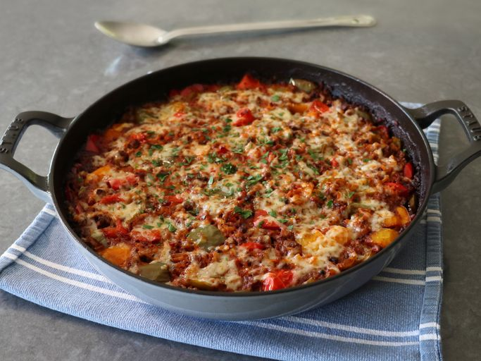

The Odin Project - Mighty Recipes

One-Pan Stuffed Pepper Casserole
Chef John's one-pan stuffed pepper casserole has all the same taste and texture of beef and rice stuffed bell peppers—maybe even more flavor—with no stuffing involved. With one stovetop-to-oven-to-table pan, there's almost no cleanup.
Prep Time:
25 mins
Cook Time:
1 hr
Rest Time:
10 mins
Total Time:
1 hr 35 mins
Servings:
8
Ingredients
- 1 tablespoon olive oil
- 1 pound ground beef
- 1 onion, diced
- 2 tablespoons unsalted butter
- 3 cloves garlic, minced
- 2 teaspoons kosher salt
- 1 teaspoon freshly ground black pepper
- 1/2 teaspoon smoked paprika
- 1/2 teaspoon garlic powder
- 1 pinch cayenne
- 2 green bell peppers, seeded, cut into 1-inch pieces
- 1 red bell peppers, seeded, cut into 1-inch pieces
- 1 orange bell pepper, seeded, cut into 1-inch pieces
- 1 cup raw basmati or other long grain white rice
- 2 teaspoons Worcestershire sauce
- 2 cups tomato sauce or tomato puree
- 1 1/2 cups beef broth
- 6 ounces Cheddar cheese, shredded, divided
Direction
- Preheat the oven to 375 degrees F (190 degrees C).
- Place an ovenproof pan over high heat, add olive oil, then the beef, and a big pinch of salt, and cook for about 1 minute, breaking the meat into smaller pieces. Add onions, and continue cooking, crumbling the meat, until it starts to brown and onions turn translucent. about 5 minutes. Brown the meat deeply for the best flavor.
- Reduce heat to medium-high, or to medium if the pan seems very hot, and add butter and garlic. Cook, stirring, until butter melts, about 1 minute. Add black pepper, paprika, garlic powder, and cayenne. Cook and stir for about 1 minute. Add bell peppers, and cook and stir until just heated through, 2 to 3 minutes.
- Add rice and stir until it is coated with the fats from the pan, about 1 minute. Add remaining salt, Worcestershire sauce, tomato sauce, and beef broth, and raise the heat to high. Stir together and wait for the mixture to simmer. Turn off heat, and sprinkle with some of the cheese, saving about 1/2 cup for the top. Use a spoon to poke and stir the cheese in evenly. Cover the pan tightly.
- Bake in the preheated oven for 45 minutes. Remove from the oven, uncover, and check rice for tenderness in a few spots. If rice is not tender, cover and continue to bake. Once rice is tender, remove the casserole, uncover, sprinkle over the rest of the cheese, and turn on the oven’s broiler.
- Broil casserole until cheese is melted, and starting to brown, 1 to 2 minutes. Let rest at least 10 minutes before serving.
Go back to Homepage
© 2026 The Odin Project | Mighty Recipes by TAMP87_Dev